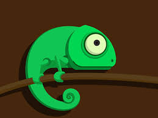
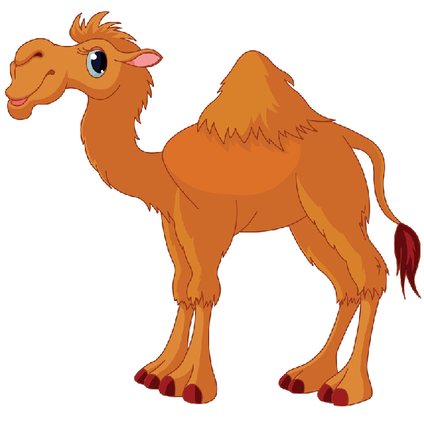

1.chameleon
Interesting Facts about chameleon
- Chameleon are reptiles that are part of the iguana suborder
- Changing skin color is an important part of communication among chameleon
- Most chameleons have a prehensile tail that they use to wrap around tree branches
.jpg) 2.pigeon
2.pigeon
Intresting Facts about pigeon
- Pigeon are incredibly complex and intelligent animals
- Pigeons are renowned for their outstanding navigational abilities
- Pigeon have excellent hearing abilities.

3.camel
Intresting Facts about camel
- There are two types of camels: One humped or “dromedary” camels and two humped Bactrian camels
- Camels have three sets of eyelids and two rows of eyelashes to keep sand out of their eyes
- Camels have thick lips which let them forage for thorny plants other animals can’t eat
- Camels can completely shut their nostrils during sandstorms